📘 Guía de uso de Jira con Scrum¶
Objetivo: que puedas organizar, planificar y ejecutar Scrum en Jira Cloud con seguridad.
Plan gratuito
Jira Cloud tiene un plan gratuito para hasta 10 usuarios que incluye tableros Scrum, backlogs, sprints e informes básicos. Es más que suficiente para proyectos de clase. Crea tu cuenta en atlassian.com sin coste.
0. Conceptos clave antes de tocar Jira¶
Roles Scrum¶
- Product Owner (PO): prioriza el valor y cuida el Product Backlog.
- Scrum Master (SM): ayuda a que el marco funcione y elimina impedimentos.
- Equipo de desarrollo: multidisciplinar y autoorganizado; construye el Incremento.
Tipos de elemento en Jira¶
Jira organiza el trabajo en una jerarquía: las épicas agrupan historias, y las historias se descomponen en subtareas.
| Tipo | Para qué | Duración |
|---|---|---|
| Épica | Un bloque grande de funcionalidad que agrupa varias historias relacionadas (p. ej., "Gestión de pagos") | Varios sprints |
| Historia de usuario | Una necesidad concreta desde el punto de vista del usuario | Un sprint |
| Tarea | Trabajo técnico sin valor directo para el usuario (p. ej., "Configurar CI") | Un sprint |
| Bug | Defecto detectado que hay que corregir | Un sprint |
| Subtarea | Paso técnico dentro de una historia (UI, API, base de datos, pruebas) | Horas o días |
Historia de usuario¶
Plantilla:
Como
<tipo de usuario>, quiero<acción>, para<beneficio>.
Criterios de aceptación (Given/When/Then):
| Gherkin | |
|---|---|
Story points (puntos de historia)¶
Medida relativa de esfuerzo y complejidad, no de horas. La escala habitual es la de Fibonacci: 1 – 2 – 3 – 5 – 8. Se estiman con Planning Poker: cada persona propone un número sin que los demás lo vean, se revelan a la vez y se debate hasta llegar a un consenso.
1. Crear cuenta y proyecto¶
- Ve a atlassian.com y crea tu cuenta gratuita.
- En la barra lateral, ve a Proyectos → Crear proyecto.
- Elige la plantilla Scrum.
- Selecciona tipo Administrado por el equipo (team-managed) — es más sencillo de configurar.
- Ponle nombre al proyecto y pulsa Crear.
📷 Selector de plantilla y confirmación del proyecto
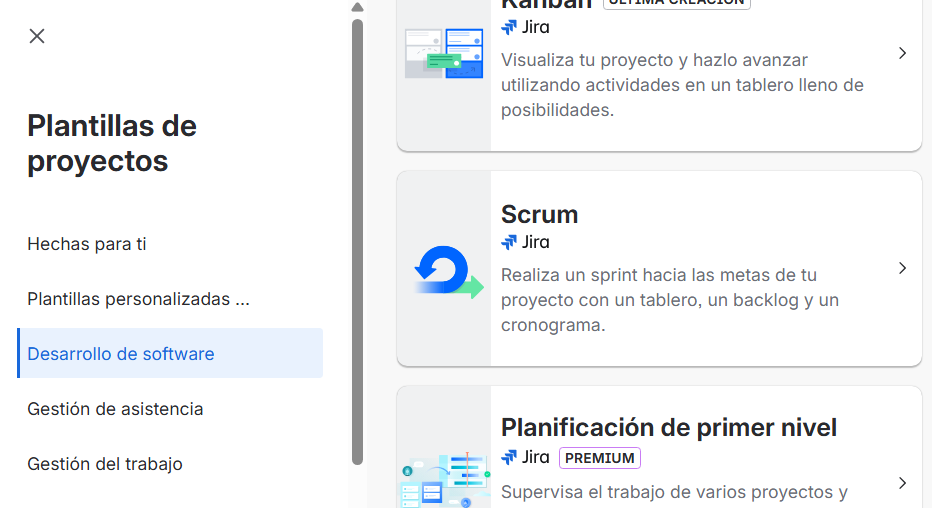
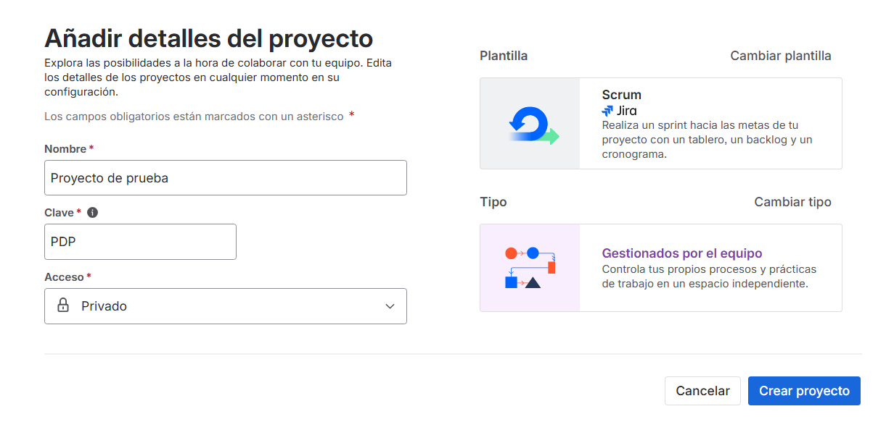
¿Team-managed o Company-managed?
Los proyectos administrados por el equipo permiten configurar el tablero y el flujo directamente, sin permisos de administrador de toda la organización. Son la opción correcta para empezar.
2. Orientación de la interfaz¶
Jira Cloud tiene dos zonas de navegación principales:
Barra lateral global (izquierda, siempre visible): acceso a todos tus proyectos, filtros guardados, paneles y configuración de cuenta.
Barra de navegación del proyecto (dentro de un proyecto): las secciones propias del proyecto. Las más importantes para Scrum son:
| Sección | Para qué se usa |
|---|---|
| Resumen | Vista general del proyecto: sprint activo, actividad reciente |
| Cronograma | Vista de épicas en el tiempo; útil para planificación a largo plazo |
| Backlog | Crear y ordenar historias; planificar sprints |
| Tablero | Gestionar el sprint en curso; mover tarjetas entre columnas |
| Informes | Burndown chart, velocidad del equipo y otros indicadores |
📷 Interfaz general de Jira
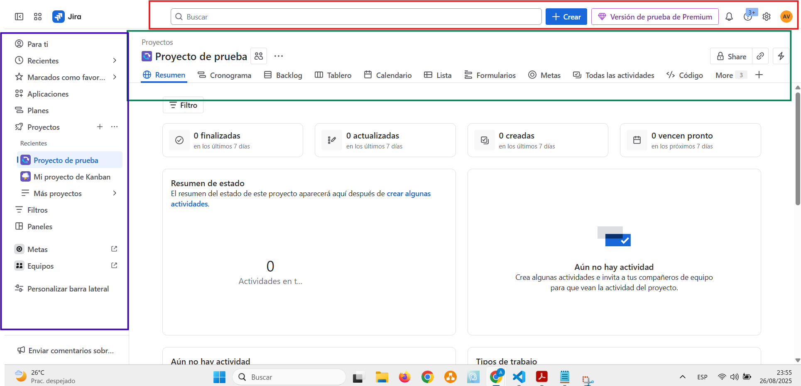
La interfaz cambia
Atlassian actualiza la interfaz con frecuencia. Si algo no está exactamente donde se indica, búscalo en la barra de navegación del proyecto o usa el buscador global (atajo: / o G + G).
3. Preparar el producto (antes del Sprint 1)¶
3.0 Ejemplo de contexto¶
A lo largo de esta guía usaremos como ejemplo una app de gestión de adopciones de animales, con tres tipos de usuario:
- Adoptante: busca animales, envía solicitud, firma la adopción.
- Voluntariado: publica fichas, gestiona solicitudes, coordina visitas.
- Coordinación: aprueba adopciones y hace el seguimiento.
Objetivo del primer sprint: que una persona pueda ver la ficha de un animal y enviar una solicitud.
3.1 Crear épicas¶
Una épica agrupa varias historias bajo un objetivo común. Las épicas se crean en la vista Cronograma y dan una imagen de alto nivel de todo el proyecto.
Cómo:
- Ve a Cronograma → Crear épica.
- Escribe un nombre descriptivo y una descripción breve del valor que aporta.
- (Opcional) Añade fechas orientativas.
Épicas sugeridas para la app de adopciones:
Registro y perfil de adoptanteGestión de animales(fichas, fotos, estados)Búsqueda y solicitudesEvaluación y visitasAdopción y contratoSeguimiento post-adopción
📷 Cronograma con épicas creadas
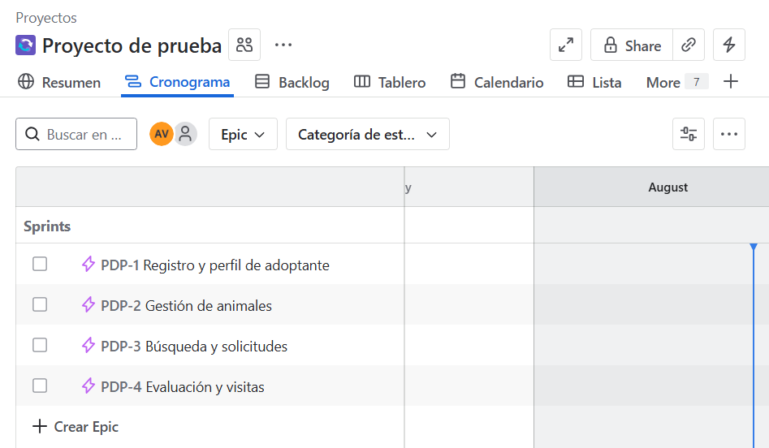
Crea todas las épicas necesarias
Antes de empezar a crear historias, define todas las épicas que abarcan la funcionalidad completa del proyecto. Es más fácil organizar el backlog cuando ya tienes la estructura.
3.2 Crear historias de usuario¶
Las historias describen valor desde el punto de vista del usuario. Las tareas técnicas van como subtareas dentro de la historia, no como elementos sueltos.
Cómo:
- Ve a Backlog → Crear → Historia.
- Escribe el título con la plantilla (Como… quiero… para…).
- En la descripción añade los criterios de aceptación en Given/When/Then.
- Asigna la épica correspondiente y los puntos de historia si ya los has estimado.
Ejemplos (épica "Búsqueda y solicitudes"):
Historia A — Enviar solicitud desde la ficha
| Text Only | |
|---|---|
| Gherkin | |
|---|---|
Historia B — Ver ficha con fotos y estado
| Text Only | |
|---|---|
| Gherkin | |
|---|---|
Si una historia no cabe en un sprint, divídela
Por ejemplo: primero enviar solicitud, en un sprint posterior adjuntar documentación.
📷 Creación y configuración de historias en el Backlog
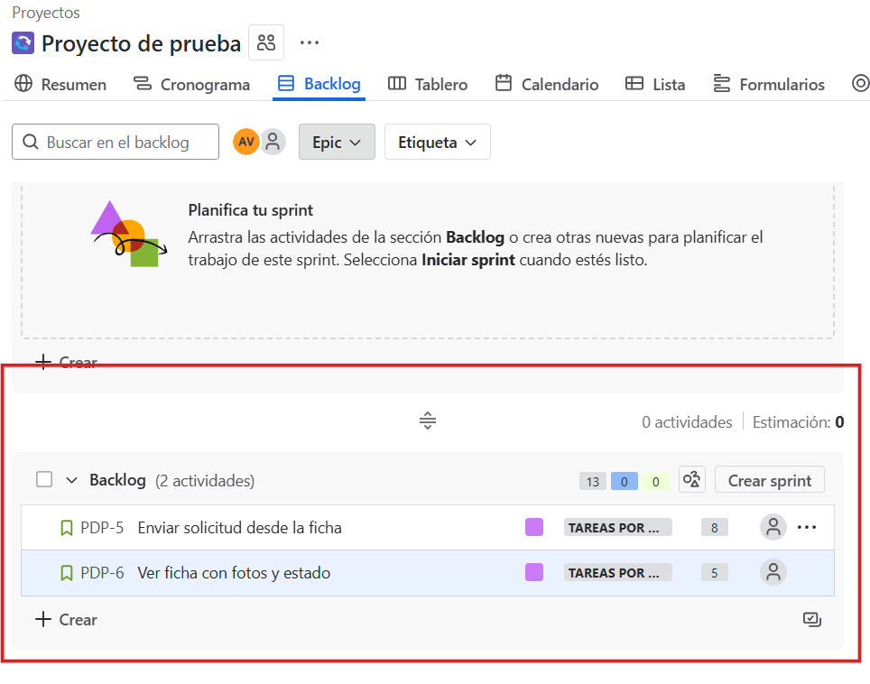
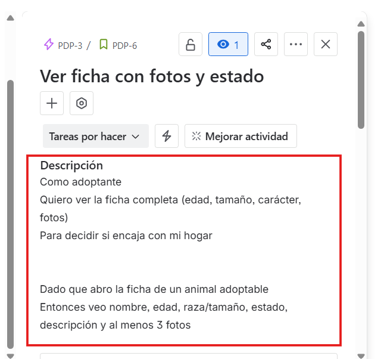
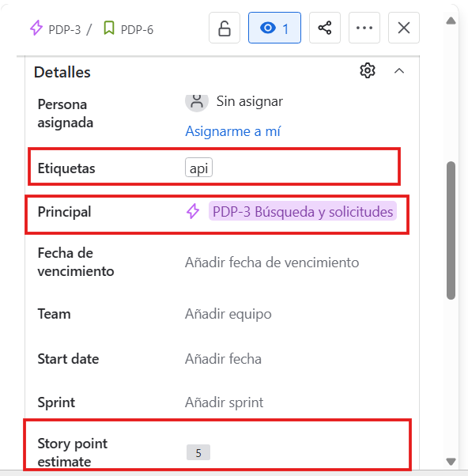
4. Priorizar y estimar el Product Backlog¶
4.1 Priorizar¶
Ordena el backlog poniendo arriba lo más importante. Los criterios habituales son:
- Valor para el usuario: ¿qué cambia para alguien si esto está hecho?
- Riesgo o incógnita: lo incierto se aborda pronto para no llevarse sorpresas tarde.
- Dependencias: algunas historias no se pueden hacer hasta que otra está terminada.
- Esfuerzo: si dos historias tienen el mismo valor, empieza por la más pequeña.
En Jira: en Backlog, arrastra las historias; lo más importante arriba.
Ejemplo para la app de adopciones:
| Historia (épica) | Valor | Riesgo | Esfuerzo | Prioridad |
|---|---|---|---|---|
| Ver ficha con fotos (Gestión de animales) | Alto | Bajo | 3 pts | ✅ Alta |
| Enviar solicitud (Búsqueda y solicitudes) | Alto | Medio | 5 pts | ✅ Alta |
| Listado y búsqueda (Búsqueda y solicitudes) | Medio | Medio | 5 pts | Media |
| Panel de solicitudes (Evaluación y visitas) | Medio | Medio | 8 pts | Media |
| Adjuntar documentos (Búsqueda y solicitudes) | Medio | Medio | 5 pts | Media |
Para el Sprint 1 nos quedamos con Ver ficha (3 pts) y Enviar solicitud (5 pts): total 8 puntos.
4.2 Estimar con story points¶
- Usa la escala 1, 2, 3, 5, 8.
- La técnica Planning Poker consiste en que cada persona elige un número, se revelan a la vez y se debate hasta acordar.
- Los puntos se asignan a la historia, no a las subtareas.
¿Cuántos puntos caben en un sprint?
Al principio no lo sabrás. Empieza conservador (8-10 puntos para un equipo de 2-3 personas, dos semanas). Con el tiempo aprenderéis vuestra velocidad real.
5. Planificar el Sprint 1¶
- En
Backlog→ Crear sprint. - Arrastra las historias priorizadas hasta cubrir vuestra capacidad estimada.
- Escribe el objetivo del sprint: qué cambia para el usuario al terminar, no qué tareas se harán.
- Ejemplo: "Permitir ver la ficha de un animal con fotos y enviar una solicitud desde la web."
- Define la duración (recomendado: 2 semanas).
- Dentro de cada historia, crea las subtareas técnicas:
- UI: formulario y validación básica
- API: endpoint POST /solicitudes
- Base de datos: esquema y tabla "solicitudes"
- QA: casos de prueba según los criterios Given/When/Then
📷 Creación y configuración del Sprint
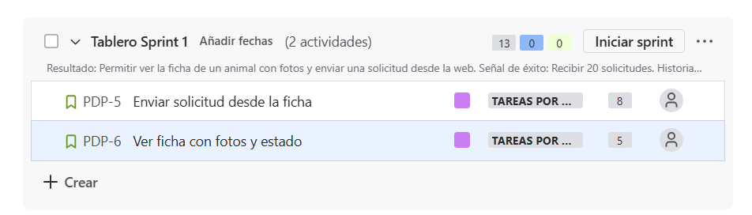
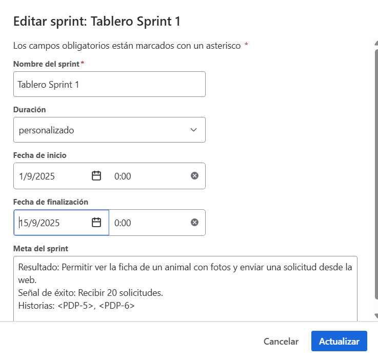
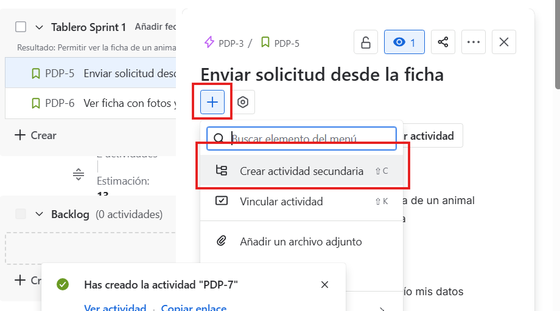
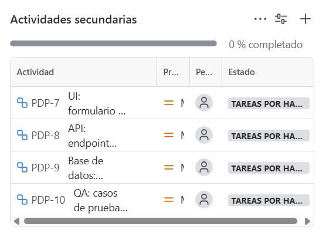
6. Ejecutar el sprint (Tablero)¶
6.1 Arrancar¶
En Backlog → Iniciar sprint → ve a Tablero. Las historias del sprint aparecerán en la columna "Por hacer".
6.2 Columnas y flujo¶
El tablero por defecto suele tener tres columnas: Por hacer → En curso → Hecho. Para trabajo con revisión o QA, conviene añadir una columna intermedia.
Cómo añadir columnas: en el Tablero, busca el botón Configuración del tablero (icono de ajustes, esquina superior derecha) → Columnas → Añadir columna. Puedes arrastrarlas para reordenarlas.
Configuración recomendada: Por hacer → En curso (WIP 3) → Revisar / QA (WIP 2) → Hecho
Ver subtareas en el tablero
Por defecto el tablero muestra solo las historias. Para ver las subtareas cambia la vista de Grupo a Subtarea con el selector que aparece en la parte superior del tablero.
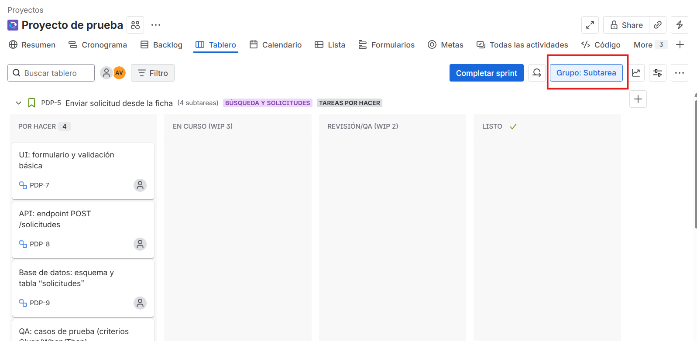
6.3 Políticas de columna¶
Define cuándo una tarjeta puede avanzar. Sin reglas escritas, "En curso" acaba significando cosas distintas para cada persona:
| Columna | Condición para entrar |
|---|---|
| En curso | Hay capacidad libre (WIP no superado) y la tarea está bien descrita |
| Revisar / QA | Hay una Pull Request abierta, las pruebas pasan y el linter está en verde |
| Hecho | Cumple el DoD: código integrado, pruebas en verde, revisión hecha, documentación mínima actualizada |
6.4 Marcar bloqueos¶
Si una tarea está bloqueada por algo externo (esperando respuesta de otro equipo, un entorno caído, una dependencia sin terminar), márcala con el icono de bandera roja (⚑ Flag) en la tarjeta. Esto la hace visible en el tablero para que el Scrum Master o el equipo puedan actuar.
7. Seguimiento durante el sprint¶
Qué puedes cambiar durante el sprint
- Estado de una tarea: arrastra la tarjeta en el tablero o cámbialo desde dentro del elemento.
- Persona asignada: entra en la tarea y edita el campo "Persona asignada".
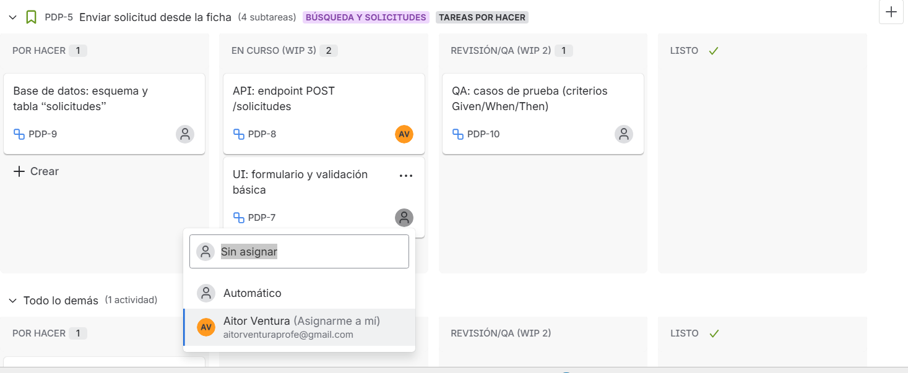
Daily Scrum: cada día, 15 minutos. El equipo abre el tablero juntos y responde tres preguntas: ¿qué hice ayer?, ¿qué haré hoy?, ¿hay algo que me bloquee?
Informes: Burndown chart¶
Durante el sprint puedes consultar el Burndown chart (gráfico de quemado) en la sección Informes del proyecto. Muestra cuánto trabajo queda por hacer en el sprint comparado con el progreso ideal esperado.
| Text Only | |
|---|---|
- Si la línea real va por encima de la ideal, el equipo va más lento de lo esperado.
- Si va por debajo, van más rápido o sobreestimaron.
Es una herramienta de detección temprana, no de control: si el martes ves que vas muy atrasado, todavía quedan días para ajustar.
8. Cerrar el sprint y aprender¶
¿Cuándo cerrar el sprint?
Un sprint se cierra cuando termina el plazo, no cuando todas las tareas estén hechas. Si la planificación fue buena, deberían estar terminadas; si no, hay algo que aprender en la retrospectiva.
- En Tablero → Completar sprint.
- Las historias sin terminar se mueven al siguiente sprint o vuelven al Backlog, según si siguen siendo prioritarias.
- Sprint Review (demo): muestra al cliente o a los compañeros las historias terminadas. Si hay feedback que genera nuevas necesidades, créalas como nuevas historias en el Backlog.
- Retrospectiva: el equipo acuerda una mejora concreta para el siguiente sprint.
- Ejemplo: "Definir datos de prueba comunes antes de empezar a programar."
- Ejemplo: "Respetar el límite WIP de verdad, no solo en teoría."
Si aparece un bug durante la demo
Créalo como un elemento de tipo Bug en el Backlog y planifícalo en el siguiente sprint o en el actual si todavía está en curso.
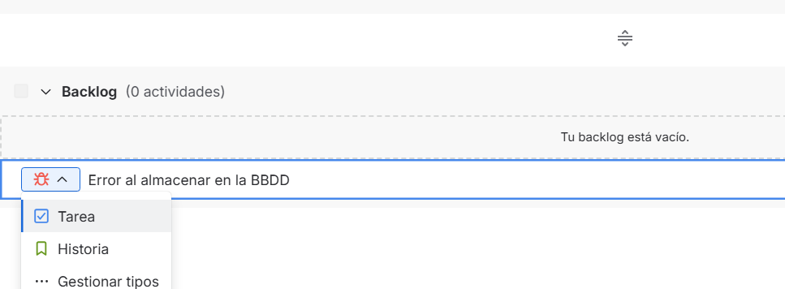
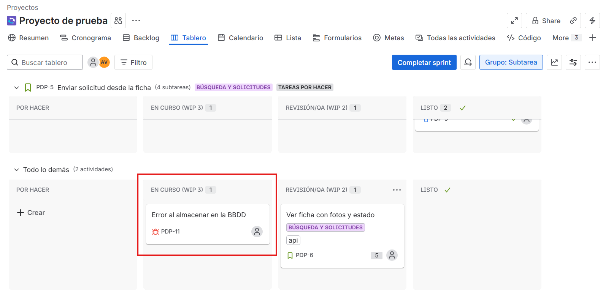
9. Plantillas rápidas¶
Historia de usuario
Criterios de aceptación
| Gherkin | |
|---|---|
Objetivo de sprint
| Text Only | |
|---|---|
10. Resumen: el ciclo completo en Jira¶
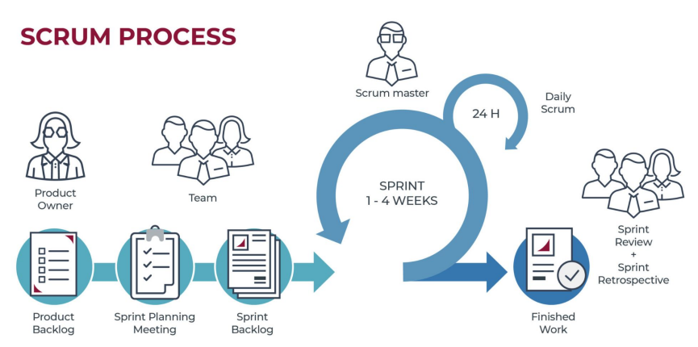
| Fase Scrum | Dónde en Jira | Qué hacer |
|---|---|---|
| Product Backlog | Cronograma + Backlog |
Crear épicas e historias; ordenar por valor; estimar con story points |
| Sprint Planning | Backlog |
Crear sprint; arrastrar historias; escribir el objetivo; crear subtareas |
| Ejecución del sprint | Tablero |
Mover tarjetas; respetar WIP; marcar bloqueos con Flag |
| Daily Scrum | Tablero |
Actualizar estados y asignaciones en vivo; detectar bloqueos |
| Seguimiento | Informes |
Revisar el Burndown chart; ajustar si el ritmo no es el esperado |
| Sprint Review | Tablero + Backlog |
Demo de lo terminado; convertir feedback en nuevas historias |
| Retrospectiva | Backlog |
Crear 1-2 tareas de mejora de proceso para el siguiente sprint |
Atlassian Intelligence (IA en Jira)
En los planes de pago, Jira incluye Atlassian Intelligence: puede sugerir epics a partir de una descripción, ayudar a redactar historias o resumir el estado de un sprint. En el plan gratuito no está disponible, pero conviene saber que existe para cuando trabajéis en empresa.